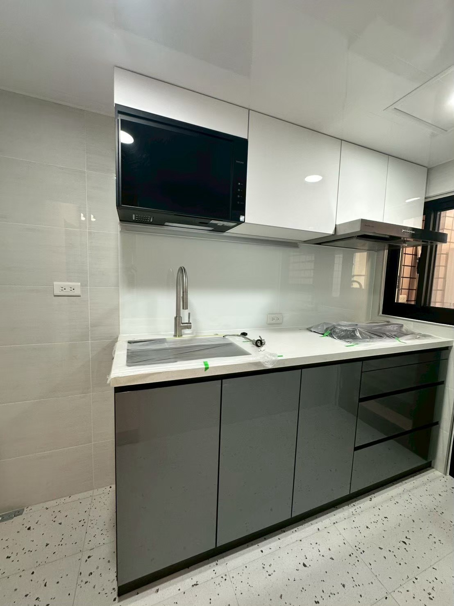
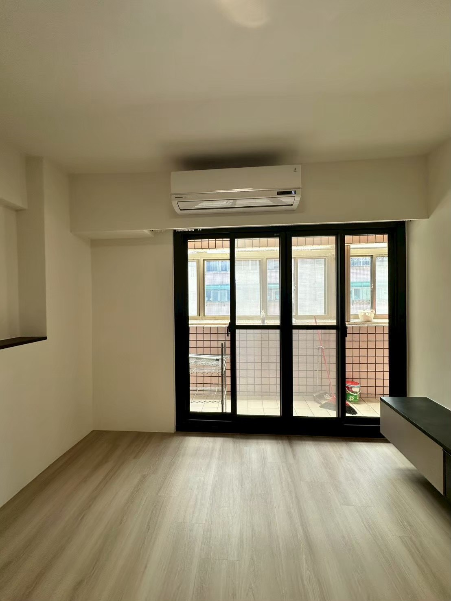

桃園室內裝修｜裝修前的現場評估
裝修的第一步，是先看懂房子。到現場確認屋況、格局與採光，了解您的生活習慣與預算，再提出適合的裝修方向。

我們重視溝通，也重視看不見的基礎工程。報價前先說明施工項目與內容，每個階段都與屋主確認後再進行，讓裝修過程安心、結果放心。
好的空間設計，不只是好看的照片，而是每天回到家都覺得舒服。宥涒室內裝潢從生活需求出發，兼顧美感與實用，依照每個家的條件，規劃最適合的空間配置。
裝修的第一步，是先看懂房子。到現場確認屋況、格局與採光，了解您的生活習慣與預算，再提出適合的裝修方向。
統包就是把設計、拆除、水電、泥作、木作、油漆等工程交給同一個團隊負責。不用自己找各個師傅、協調工期，有問題也只需要找一個窗口。
新成屋交屋後，先確認格局與插座、燈具位置，再依照家具尺寸與生活習慣，規劃需要增加的管線與照明；天花板修飾管線與樑柱，搭配嵌燈與間接照明，營造溫暖舒適的居家氛圍。

管線老化、壁癌、滲漏水、格局不合現代生活、採光不足，都是中古屋常見的狀況。裝修前先完整檢查，趁裝修一併更新管線；壁癌與滲水先找出原因，從基層整理、防水施作到牆面修補，牆面才不會反覆出問題。
東西放在用得到的地方，收拾就變得輕鬆。善用自然光，搭配嵌燈、間接照明與主燈；透過格局調整、淺色系搭配與整合式櫃體減少零碎空間，讓小坪數看起來更寬敞、住起來更舒適。
衣櫃、鞋櫃、電視櫃、書櫃、廚房收納，依照現場尺寸與使用需求規劃。工廠裁切、尺寸精準，現場組裝、施工快速粉塵少，板材與門片款式多樣，也能與木作、天花板設計整合規劃。
工序依序進行：拆除 → 水電 → 泥作與防水 → 木作 → 油漆 → 系統櫃與燈具，減少重工與等待，工期也更好掌握。
資料越完整，討論起來越有效率。新成屋、中古屋、老屋翻修都歡迎洽詢。